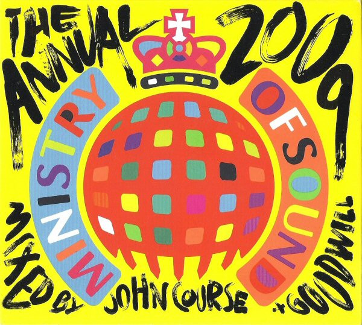

CD
The 2009 Annual
John Course
Media: NM · Sleeve: NM
CA$15.00
Discogs SuggestedCA$19.52
Discogs MedianCA$19.52
Discogs HighCA$19.52
- Year
- 2008
- Label
- Ministry Of Sound
- Catalog #
- MOSA089
- Country
- AUAustralia
- Genre / Style
- Electronic · House, Electro